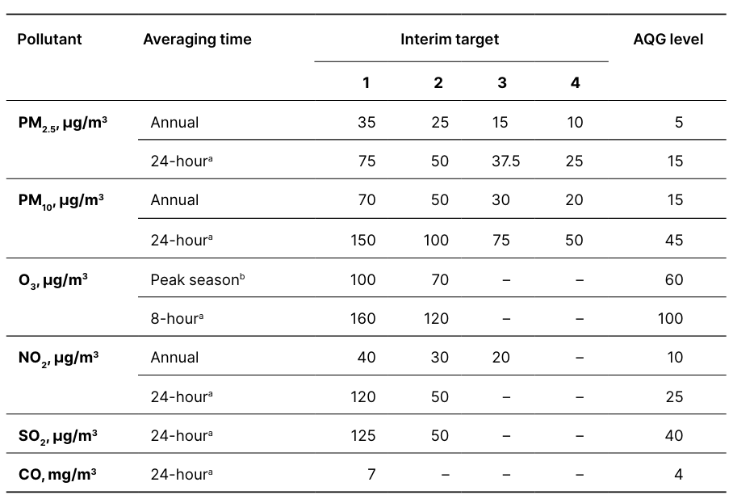
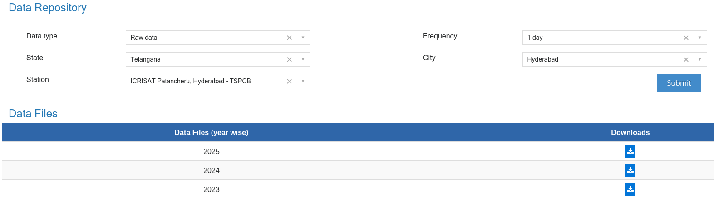

Air quality guidelines: These are notified by the World Health Organisation (W.H.O). These guidelines are much more stringent when compared to NAAQS.

Note that the air quality standards are not based on AQI. They are based on raw pollutant concentrations.
In this tutorial, we will learn to determine if a city is complying with air quality standards (both NAAQS and WHO guidelines) for pollutants PM2.5, PM10, NO2 and SO2. Only these 4 pollutants have annual standards.
3.1 Dataset
We need data of raw pollutant concentrations of a city. This data can be obtained from the CPCB’s Data Repository. In this tutorial, we will work with Hyderabad data and check if Hyderabad complies with air quality standards. From the data repository, we can download the daily average concentration of each pollutant from each monitoring station in Hyderabad, for the year 2025.

Show hidden code that prepares raw concentration daily averages of each station in Hyderabad
Checking compliance based on annual averages is a straight forward task. We can calculate the annual average concentration from the daily averages for each pollutant and compare the annual average with the air quality standard. It is only pollutants PM2.5, PM10, NO2, and SO2 that have annual standards. SO2 does not have an annual standard in W.H.O guidelines.
The only condition to check as per NAAQS is that there are a minimum of 104 measurements to calculate the annual average. Since our data is from Continous Ambient Air Quality Monitors (CAAQMS), this condition would be met.
We can just compare these annual averages with the NAAQS and W.H.O guidelines now to check if Hyderabad’s annual average pollution complies with air quality standards.
Hyderabad’s air quality did not meet any of the W.H.O guidelines. It met NAAQS guidelines for PM2.5, NO2, SO2 and failed to meet PM10 guideline. This gives some policy insight that Hyderabad should focus more on cutting PM10.
3.3 Daily average compliance
Annual averages could be misleading as we breathe air every day. A couple of months of high pollution along with clean air in remaining months would result in a low annual average. But, our health would still get affected. Hence, the air quality standards have daily averages as well. As per NAAQS, a city should meet these daily averages on 98% of the days and on no two consecutive days should a city miss the standard.
As per W.H.O, a city should meet these daily averages on 99% of the days.
Note: O3 and CO require Daily Maximum 8-hour average concentrations for comparison.
#Calculate 98th percentile of each pollutant concentrationhyderabad_city_percentiles = hyderabad_city_dailyaverages.quantile(0.98).reset_index() # 98th percentilehyderabad_city_percentiles.columns = ['pollutant', '98th_pct']hyderabad_city_percentiles
pollutant
98th_pct
0
PM2.5
52.443343
1
PM10
110.660585
2
NO2
27.319477
3
SO2
14.044523
# Checking if air quality crossed NAAQS standards on two consecutive daysfor idx,row in hyderabad_city_percentiles.iterrows(): pollutant = row['pollutant'] daily_averages = hyderabad_city_dailyaverages[pollutant] #Daily city-averages of pollutant# Checking if city missed the NAAQS on a day daily_averages_cross_NAAQS = daily_averages > NAAQS_DAILY[pollutant]#Checking if city missed the NAAQS on two consecutive days has_consecutive = daily_averages_cross_NAAQS.rolling(2).sum().eq(2).any() hyderabad_city_percentiles.loc[idx, 'consecutive_fail'] = has_consecutivehyderabad_city_percentiles
#Calculate 99th percentile - for WHO guidelinehyderabad_city_percentiles['99th_pct'] = hyderabad_city_dailyaverages.quantile(0.99).reset_index()[0.99]hyderabad_city_percentiles
With daily averages, Hyderabad’s air quality met WHO guideline only for SO2 and not for any other pollutant. This could be because there is no thermal power plant inside Hyderabad city.
As with annual averages, it met NAAQS guidelines for PM2.5, NO2 and SO2 and failed to meet PM10 guideline.
We can also analyse this compliance as the number of days on which residents of Hyderabad breathed unhealthy air
print("In 2025, residents of Hyderabad breathed air that is not complaint with NAAQS for \n")for idx,row in hyderabad_city_percentiles.iterrows(): pollutant = row['pollutant'] daily_averages = hyderabad_city_dailyaverages[pollutant] #Daily city-averages of pollutant# Checking if city missed the NAAQS on a day daily_averages_cross_NAAQS = daily_averages > NAAQS_DAILY[pollutant] num_days = daily_averages_cross_NAAQS.sum()print(f"{num_days} days for {pollutant} pollutant \n")
In 2025, residents of Hyderabad breathed air that is not complaint with NAAQS for
2 days for PM2.5 pollutant
70 days for PM10 pollutant
0 days for NO2 pollutant
0 days for SO2 pollutant
print("In 2025, residents of Hyderabad breathed air that is not complaint with W.H.O for \n")for idx,row in hyderabad_city_percentiles.iterrows(): pollutant = row['pollutant'] daily_averages = hyderabad_city_dailyaverages[pollutant] #Daily city-averages of pollutant# Checking if city missed the NAAQS on a day daily_averages_cross_WHO = daily_averages > WHO_DAILY[pollutant] num_days = daily_averages_cross_WHO.sum()print(f"{num_days} days for {pollutant} pollutant \n")
In 2025, residents of Hyderabad breathed air that is not complaint with W.H.O for
365 days for PM2.5 pollutant
365 days for PM10 pollutant
19 days for NO2 pollutant
0 days for SO2 pollutant
3.4 Summary
In this tutorial, we learnt how to check if a city is complying with air quality standards - both NAAQS and W.H.O guidelines. We learnt that this compliance assessment is done using raw concentration data of each pollutant and not AQI. We learnt how to check compliance using both annual averages and daily averages.
It should be noted that we analysed the compliance based on the monitoring data only. The official assessment of a city’s performance under the National Clean Air Program (NCAP) also happens on the basis of monitoring data alone. In the previous tutorial we learnt that monitoring network of a city can spatially under-represent a city. That limitation would apply in this analysis as well.